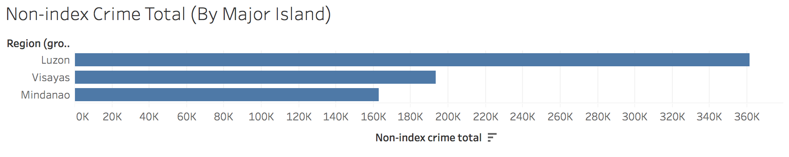
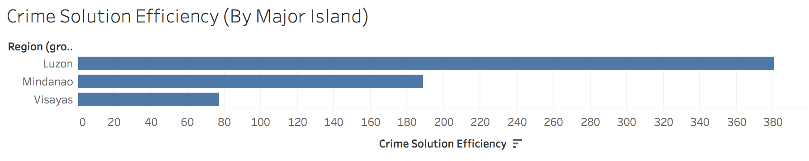

Data Vigilance
A storytelling on the power of data
A storytelling on the power of data
Data (/ˈdeɪtə/ DAY-tə, /ˈdætə/ DA-tə, or /ˈdɑːtə/ DAH-tə)[1] is a set of values of qualitative or quantitative variables. Pieces of data are individual pieces of information. While the concept of data is commonly associated with scientific research, data is collected by a huge range of organizations and institutions, including businesses (e.g., sales data, revenue, profits, stock price), governments (e.g., crime rates, unemployment rates, literacy rates) and non-governmental organizations (e.g., censuses of the number of homeless people by non-profit organizations).
From this single chart of data from the dataset, people could start creating conclusions that NCR is the most unsafe place in the Philippines.
Articles may come up from the media that the PNP is doing badly in the National Capital Region, causing people to have low satisfaction for their services.
From this chart, we could actually see that the National Capital Region has the most number of crimes solved.
From this chart, we could say that the National Capital Region is one of the top performers in solving crimes.
This debunks our conclusion from the initial chart, that the National Capital Region is the most unsafe place in the Philippines.
As a child born in the Philippines, Mindanao has always been considered as a dangerous place. Multiple stints done by rebel groups, acts of terrorism, and even political killings, has put Mindanao into bad light both to locals and tourists.
In this chart, I grouped together the regions in the Philippines by Major Island Groups. Mindanao consists of ARMM, Caraga, Davao Region, Soccsksargen, Northern Mindanao, and Zamboanga Peninsula. Visayas consists of Western Visayas, Central Visayas, and Eastern Visayas. Luzon consists of NCR, Central Luzon, CALABARZON, MIMAROPA, Bicol Region, Ilocos Region, Cordillera Valley, and Cagayan Valley.
As what you can see from the above, Mindanao actually ranks last in Total Crime Volume. That's one point for Mindanao for being the safest Major Island in the Philippines based on data.
Now this chart describes the average monthly rate of index crimes per major island. It is the amount of index crimes that occur every month for every 100,000 people in the population. As you can see, Mindanao only ranks second in this matter.
This time, the chart above shows the total of all the non-index crimes per major island. Mindanao ranks last, and is the safest. Considering that non-index crimes are the most abundant type of crimes that occur.
Last but not the least, even in solving crimes, Mindanao is not ranked at the last place.
Now, this may look like I'm putting Visayas on a bad light. Please understand that these are the data themselves, showing you the truth without bias.
From what we have discussed in this website, we can see that data can be used both to give meaningful information and even create misinformation.
Looking at data in only one way, could make us see something that is wrong, and could be manipulated. This is something that we discussed on the earlier parts of this website. Looking at NCRs data in an incomplete manner, without digging further may lead us to conclusions that are wrong and may be misleading. Data is indeed powerful, it is something that could clear up misconceptions and even help us in finding solutions. This discussion might be shallow, but it is an hopeful attempt in making you understand how data can be used to show a story and provide a picture of facts to people.
I encourage you to explore and study data. We have started something here, and you can continue in creating meaningful information for everyone. Always seek the truth, be vigilant.